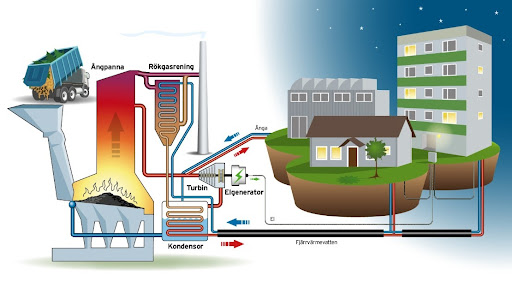
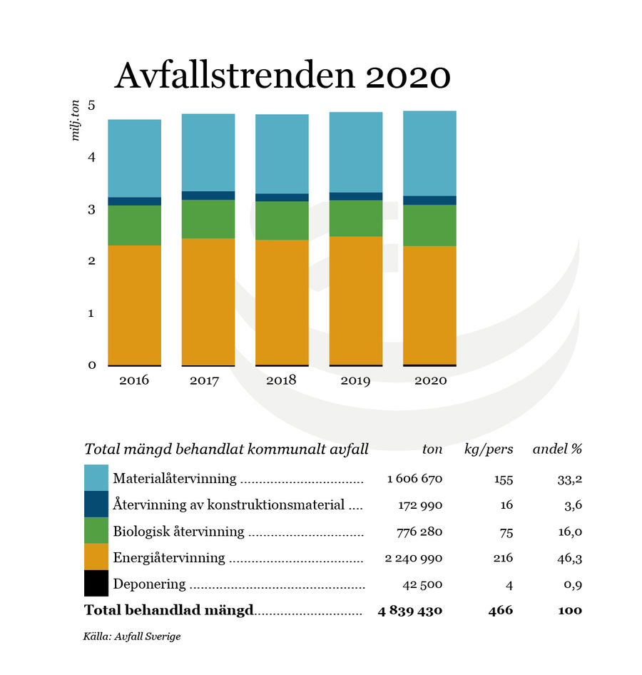
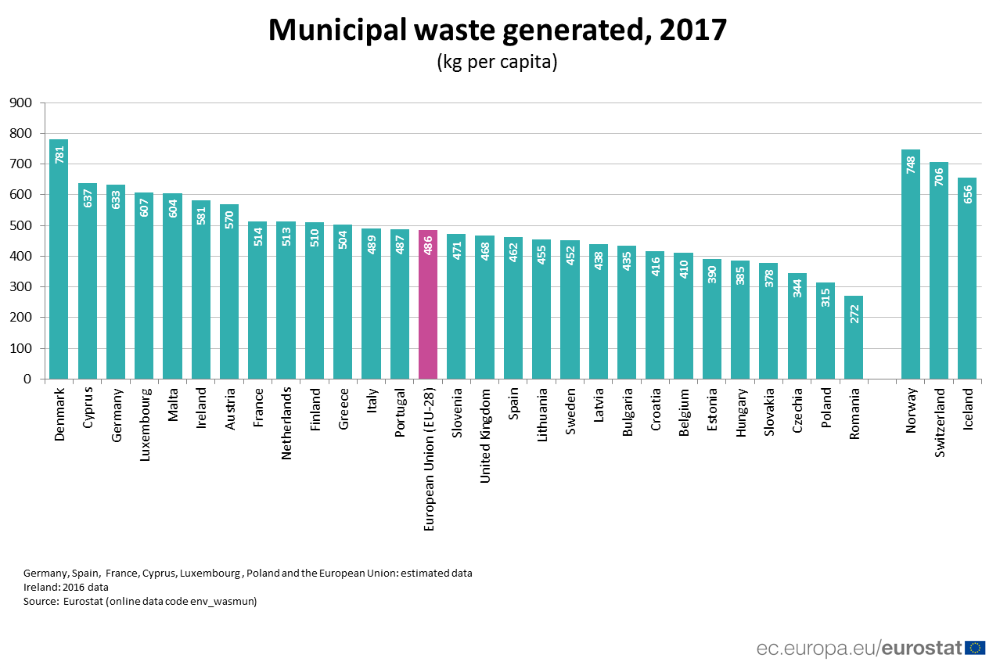

Förbränning

Presentation:
Sopor är något som finns i alla hushåll och nya avfall kommer alltid att skapas. För en allmän person i vardagen är avfall värdelösa, men det många inte tänker på är att avfall är en stor del av värme och energiproduktionen i till exempel Sverige. Avfall går att använda som en energikälla genom att förbränna dem med hjälp av syrereglering och en start tändning. När avfallet förbränns frigörs värme som kan användas för att lagras eller göras till energi. I sverige använder vi kraftvärmeverk genom att den frigjorda värmen från rökgaserna värmer vatten vars ångor driver en turbin för elproduktion. I sveriges värmeverk produceras enbart värme genom att all energi från förbränningen överförs till fjärrvärmenätet.

Hur mycket energi genererad:
Cirka hälften av hushållsavfallet i Sverige används inom energiåtervinning för produktionen av el, fjärrvärme samt fjärrkyla. I Europa är Sverige landet som utvinner mest energi per ton avfall och den siffran landar på ett ungefärligt värde 3 MWh per ton. Man kan med hjälp av den siffran hitta ett ungefärligt värde på hur mycket energi som produceras varje år genom att se statistiken på hur många ton avfall man i Sverige genererar per år. Under 2020 gav varje svensk upphov till 466 kg avfall varav 216 kg/person användes inom återvinningen. Totalt blev detta uppskattat till ca 2 250 000 ton avfall för energibruk. Under 2020 kunde Sverige utvinna ca 6 750 000 MWh enbart från avfallsförbränning.
Jämförelse hur andra länder använder samma källa:
Jämför man med andra länder i Europa kan man utläsa att Sverige förbränner en mycket större del av sitt avfall gentemot andra länder med liknande avfallsproduktion per capita. Under 2017 genererade Sverige 452 kg avfall per capita medan Danmark genererade 781 kg avfall per capita och Tyskland 633 kg avfall per capita. Den genomsnittliga procenten för hur mycket av avfallen som användes för förbränning i länderna i Europa låg på 28 procent medan Sverige låg på 50,2 procent. Detta visar att Sverige använder sig mer utav avfallsförbränning än många av de andra länderna i Europa.


För och nackdelar:
De största fördelarna med avfallsförbränning är att man utnyttjar något som annars inte går att använda till att skapa el och värme, därmed räknas avfallsförbränning som återvinning. Det är en energikälla som alltid kan fungera så länge det genereras nytt avfall och kan användas till mer än ett syfte då det kan användas till både el och fjärrvärme. Nackdelar förekommer framförallt när man förbränner osorterat avfall då material kan förbrännas som släpper iväg miljöfarliga gaser till exempel dioxin. Askan som sedan skapats av det osorterade avfallet kommer då också att bli miljöfarligt.